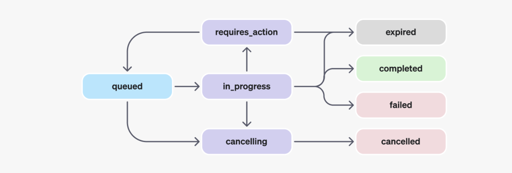

import openai
from openai import OpenAI
import os
from dotenv import load_dotenv, find_dotenv
_ = load_dotenv(find_dotenv())
openai.api_key = os.getenv('OPENAI_API_KEY')Assistants API and Files
We create an Assistant that can create data visualization based on a .csv file to demonstrate how to upload and download files using OpenAi’s Assistants API.
Setup
Initialize OpenAI client
client = OpenAI()Create Assistant
assistant = client.beta.assistants.create(
name="Data Visualizations",
instructions="You are great at creating beautiful data visualizations. You analyze data present in .csv files, understand relationships between variables, and create data visualizations relevant to those relationships. You also share a brief text summary of the relationships observed.",
tools=[ {"type": "code_interpreter"}],
model="gpt-4-1106-preview",
)Create Thread
thread = client.beta.threads.create()How to Obbtain the Thread id
thread- Thread(id=‘thread_iB6WpSbp6r6j9ayrdHIyyafC’, created_at=1699520936, metadata={}, object=‘thread’)
thread_id = thread.id
print(f'Thread ID: {thread_id}')- Thread ID: thread_iB6WpSbp6r6j9ayrdHIyyafC
Add a Message & File
- You can attach a maximum of 20 files per Assistant
- They can be at most 512 MB each.
- The size of all the files uploaded by an organization should not exceed 100GB.
Create file
- Usually, we could simply input the file in a UI
- Here, we have to upload it
file_response = client.files.create(
file=open("cars.csv", "rb"),
purpose='assistants'
)file_id = file_response.id
print(file_id)- file-4la1LvfQKJMgGxsKobJQBWkH
Create message
- A Message contains the user’s text, and optionally, any files that the user uploads (no images).
message = client.beta.threads.messages.create(
thread_id=thread.id,
role='user',
content="Create a data visualization based on the relationship of the variables Miles_per_Gallon and Horsepower in this file. Interpret the findings of the plot you have created",
file_ids=[file_id]
)Create Run
- When you have all the context you need from your user in the Thread, you can run the Thread with an Assistant of your choice.
run = client.beta.threads.runs.create(
thread_id=thread.id,
assistant_id=assistant.id
)Run objects

Run objects explained
| STATUS | DEFINITION |
|---|---|
queued |
When Runs are first created or when you complete the required_action, they are moved to a queued status. They should almost immediately move to in_progress. |
in_progress |
While in_progress, the Assistant uses the model and tools to perform steps. You can view progress being made by the Run by examining the Run Steps. |
completed |
The Run successfully completed! You can now view all Messages the Assistant added to the Thread, and all the steps the Run took. You can also continue the conversation by adding more user Messages to the Thread and creating another Run. |
requires_action |
When using the Function calling tool, the Run will move to a required_action state once the model determines the names and arguments of the functions to be called. You must then run those functions and submit the outputs before the run proceeds. If the outputs are not provided before the expires_at timestamp passes (roughly 10 mins past creation), the run will move to an expired status. |
expired |
This happens when the function calling outputs were not submitted before expires_at and the run expires. Additionally, if the runs take too long to execute and go beyond the time stated in expires_at, our systems will expire the run. |
cancelling |
You can attempt to cancel an in_progress run using the Cancel Run endpoint. Once the attempt to cancel succeeds, status of the Run moves to cancelled. Cancellation is attempted but not guaranteed. |
cancelled |
Run was successfully cancelled. |
failed |
You can view the reason for the failure by looking at the last_error object in the Run. The timestamp for the failure will be recorded under failed_at. |
Inspect status of the Run
You need to wait until the status=‘completed’ before you can retrieve the Messages added by the Assistant.
Let’s check the status
run.status- ‘queued’
Retrieve current Run
- Again, check the current status with
retrieve
run = client.beta.threads.runs.retrieve(
thread_id=thread.id,
run_id=run.id
)print(run.status)- ‘completed’
Retrieve Messages
Once the Run completes, you can retrieve the Messages added by the Assistant to the Thread.
messages_cursor = client.beta.threads.messages.list(
thread_id=thread.id
)Inspect all messages
print(messages_cursor)SyncCursorPage[ThreadMessage](data=[ThreadMessage(id='msg_mMdjZ6raDxzbYr065ojq9jav', assistant_id='asst_oLnJ4yhowVZrqUecc8OCtNaL', content=[MessageContentImageFile(image_file=ImageFile(file_id='file-98KwkltWZr4n0kZxMUdqIzTM'), type='image_file'), MessageContentText(text=Text(annotations=[], value="The scatter plot above displays the relationship between 'Horsepower' and 'Miles per Gallon' (MPG). From the plot, we can observe the following:\n\n- There is a general negative correlation between Horsepower and Miles per Gallon. This means that as Horsepower increases, MPG tends to decrease.\n- This relationship can be attributed to the fact that cars with higher horsepower values are usually more powerful and may require more fuel to sustain that power, resulting in lower fuel efficiency.\n\nHowever, it is important to note that other factors not depicted in this plot could also influence the MPG, such as the weight of the car, the type of engine, and aerodynamic design. For more comprehensive insights, it would be beneficial to consider these variables in future analyses.\n\nWould you like to perform any further analysis on this dataset or have any other questions?"), type='text')], created_at=1699521035, file_ids=[], metadata={}, object='thread.message', role='assistant', run_id='run_kctoJoy5qZcNukQK5dKadfMD', thread_id='thread_iB6WpSbp6r6j9ayrdHIyyafC'), ThreadMessage(id='msg_vaS3zpOTi6sDzeXwZWyQjEvT', assistant_id='asst_oLnJ4yhowVZrqUecc8OCtNaL', content=[MessageContentText(text=Text(annotations=[], value="The data has been successfully loaded and it contains the following columns: 'Name', 'Miles_per_Gallon', 'Cylinders', 'Displacement', 'Horsepower', 'Weight_in_lbs', 'Acceleration', 'Year', and 'Origin'.\n\nNext, I will create a scatter plot to visualize the relationship between 'Miles_per_Gallon' (MPG) and 'Horsepower'. The scatter plot will help us understand if there's a trend or correlation between these two variables. Let's create the plot now."), type='text')], created_at=1699521019, file_ids=[], metadata={}, object='thread.message', role='assistant', run_id='run_kctoJoy5qZcNukQK5dKadfMD', thread_id='thread_iB6WpSbp6r6j9ayrdHIyyafC'), ThreadMessage(id='msg_jFgAaY1O0aTLw1bI7eyUuqy0', assistant_id='asst_oLnJ4yhowVZrqUecc8OCtNaL', content=[MessageContentText(text=Text(annotations=[], value="First, let's load the .csv file and preview its contents to understand the structure of the data. Then we can analyze the variables Miles_per_Gallon and Horsepower and create a data visualization to interpret their relationship. I will start by loading the data."), type='text')], created_at=1699521009, file_ids=[], metadata={}, object='thread.message', role='assistant', run_id='run_kctoJoy5qZcNukQK5dKadfMD', thread_id='thread_iB6WpSbp6r6j9ayrdHIyyafC'), ThreadMessage(id='msg_0WMtoLxPzCXB14wNTIicUkqO', assistant_id=None, content=[MessageContentText(text=Text(annotations=[], value='Create a data visualization based on the relationship of the variables Miles_per_Gallon and Horsepower in this file. Interpret the findings of the plot you have created'), type='text')], created_at=1699521002, file_ids=['file-4la1LvfQKJMgGxsKobJQBWkH'], metadata={}, object='thread.message', role='user', run_id=None, thread_id='thread_iB6WpSbp6r6j9ayrdHIyyafC')], object='list', first_id='msg_mMdjZ6raDxzbYr065ojq9jav', last_id='msg_0WMtoLxPzCXB14wNTIicUkqO', has_more=False)Obtain text response
Display response of assistant
# Iterate over the cursor to get all messages
messages = [message for message in messages_cursor]
# The assistant's response should be the first message in the thread
assistant_response = messages[0].content if messages else "No response yet."Output
print(assistant_response)
[MessageContentImageFile(image_file=ImageFile(file_id='file-98KwkltWZr4n0kZxMUdqIzTM'), type='image_file'), MessageContentText(text=Text(annotations=[], value="The scatter plot above displays the relationship between 'Horsepower' and 'Miles per Gallon' (MPG). From the plot, we can observe the following:\n\n- There is a general negative correlation between Horsepower and Miles per Gallon. This means that as Horsepower increases, MPG tends to decrease.\n- This relationship can be attributed to the fact that cars with higher horsepower values are usually more powerful and may require more fuel to sustain that power, resulting in lower fuel efficiency.\n\nHowever, it is important to note that other factors not depicted in this plot could also influence the MPG, such as the weight of the car, the type of engine, and aerodynamic design. For more comprehensive insights, it would be beneficial to consider these variables in future analyses.\n\nWould you like to perform any further analysis on this dataset or have any other questions?"), type='text')]Extract only text response
assistant_response[1].text.value- “The scatter plot above displays the relationship between ‘Horsepower’ and ‘Miles per Gallon’ (MPG). From the plot, we can observe the following:- There is a general negative correlation between Horsepower and Miles per Gallon. This means that as Horsepower increases, MPG tends to decrease.- This relationship can be attributed to the fact that cars with higher horsepower values are usually more powerful and may require more fuel to sustain that power, resulting in lower fuel efficiency., it is important to note that other factors not depicted in this plot could also influence the MPG, such as the weight of the car, the type of engine, and aerodynamic design. For more comprehensive insights, it would be beneficial to consider these variables in future analyses.you like to perform any further analysis on this dataset or have any other questions?”
Download images and files
The API also outputs files, such as generating image diagrams, CSVs, and PDFs.
There are two types of files that are generated:
- Images
- Data files (e.g. a csv file with data generated by the Assistant)
Get file content
- The file content can then be downloaded by passing the file ID to the Files API
response_file_id = assistant_response[0].image_file.file_idprint(response_file_id)- file-98KwkltWZr4n0kZxMUdqIzTM
content = client.files.retrieve_content(response_file_id)Work in progress 😊
tbd
Input and output logs of Code Interpreter
Run steps
- By listing the steps of a Run that called Code Interpreter, you can inspect the code input and outputs logs of Code Interpreter:
run_steps = client.beta.threads.runs.steps.list(
thread_id=thread.id,
run_id=run.id
)print(run_steps)